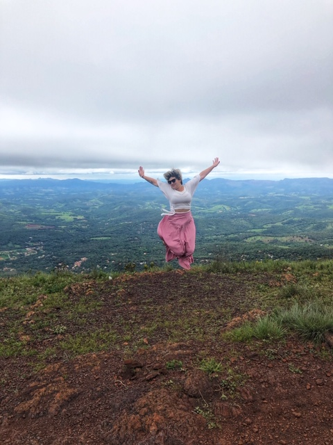
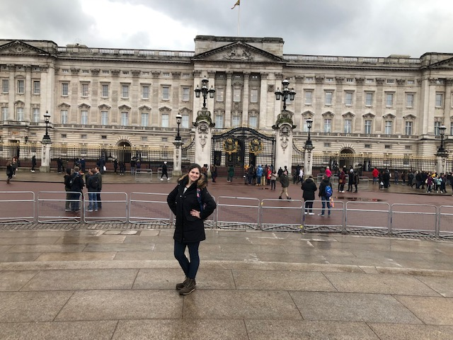
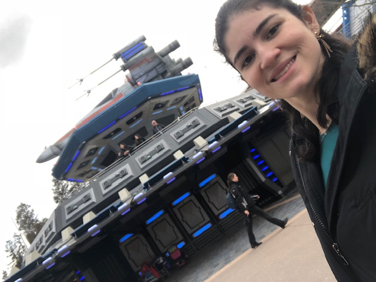
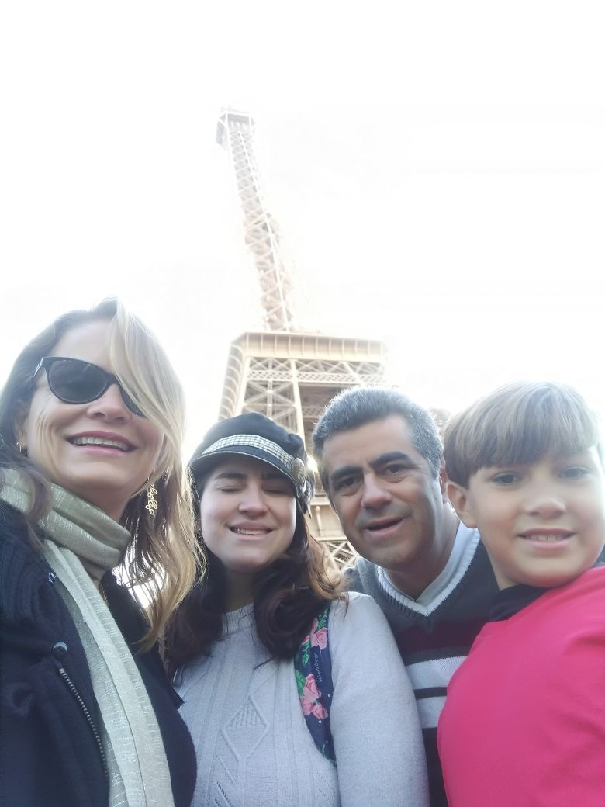
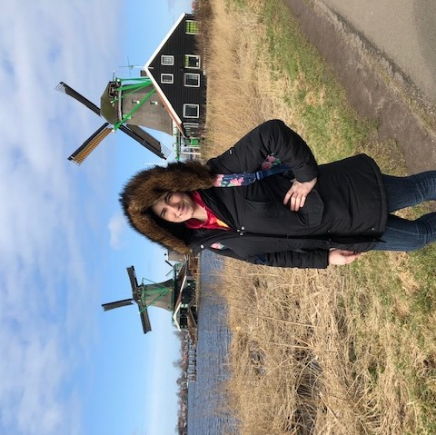

Que tal me conhecer um pouco?
Brasileira nascida e criada em Belo Horizonte, Minas Gerais.
Graduada em Engenharia Eletrica pela UNIFEI - Universidade Federal de Itajubá
Morei por 8 meses na Irlanda, onde estudei Inglês e me desenvolvi muito como pessoa.
Hoje sou estudante de Desenvolvimento de Software na Trybe!
Em busca constante de aprendizado e conhecimento!
Durante a faculdade comecei a trabalhar como cerimonialista de casamentos, com a OBA! eventos onde descobri um amor incrível por essa profissão, mesmo não sendo muito ligada a engenharia, rsrs.
Depois de formada decidi fazer um intercâmbio para a Irlanda, 6 meses de curso de inglês, onde tive o prazer de trabalhar em cozinha do Bewley's Grafton Street como commis chef de bakery, que era um sonho, conheci 6 países e vijei com meus pais e meu irmão.Posto junto algumas fotinhas pra mostrar esse momento muito bacana.
Sou apaixonada por viagens já deu pra perceber, rsrs. depois que voltei da Irlanda viajei pra vários lugares, vou ate deixar umas fotos bacaninhas aqui. Mas nesse tempo que passou depois que voltei, senti a necessidade de me encontrar em algum lugar em uma profissão. Sempre tive um interesse por programação, o pouco que vi na faculdade tinha me cativado bem, da area de Engenharia Elétrica o que mais me cativava era automação, e trabalhei um tempo com a programação de plc's, mas não tinha achado ainda um curso que cortava a parte da teoria que eu ja tinha tido na faculdade e focasse na parte prática da coisa, foi ai que o anuncio da Trybe apareceu, caiu do céu como um presente de Deus, e hoje esse é o meu projeto na Trybe, com exatos 13 dias de aula!
   
Como funciona a formação da Trybe?
A formação da Trybe tem duração de aproximadamente 12 meses, com aulas de segunda a sexta,
de 14h às 20h e carga horária aproximada de 1.500 horas.
Independente da modalidade escolhida, as aulas, os conteúdos, a plataforma, o time de
profissionais e a conexão com as empresas serão sempre idênticos!
Principais Benefícios da Trybe para mim!
- Ensino de metodologia ativa, escola do futuro.
- Só paga quando estiver trabalhando!
- ! ano de curso, apesar de intenso o que é um ano pra quem ja viveu 27? rs
- O ambiente é incrível, profissional e acolhedor uma mistura muito dificl de encontrar no mercado!
- Vários outros que não vou listar, porque preciso terminar o Projeto!